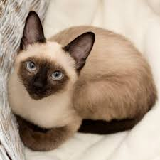
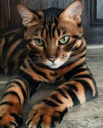
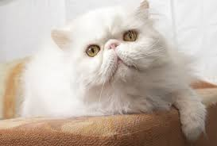
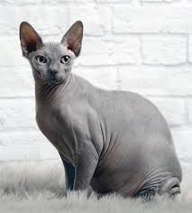

Featured Feline

The Siamese
Known for their brilliant blue eyes and striking coats, Siamese cats are one of the most recognizable breeds in the world. They are highly social, vocal, and intelligent companions who love to be the center of attention.
Popular Breeds

Bengal
Wild appearance with a domestic temperament.

Maine Coon
The gentle giant of the cat world.

Persian
Luxurious long fur and a sweet personality.

Sphynx
Hairless, warm, and incredibly friendly.
Did You Know?
Cats commonly sleep for 12 to 16 hours each day.
Cats can rotate each ear independently to help locate sounds.
Powerful hind legs help cats leap several times their body length.
Neon Mascot
I'm the official guardian of this static realm.